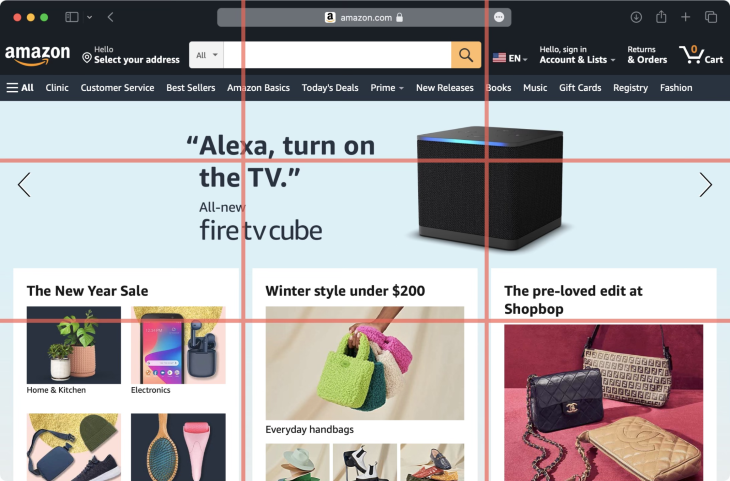
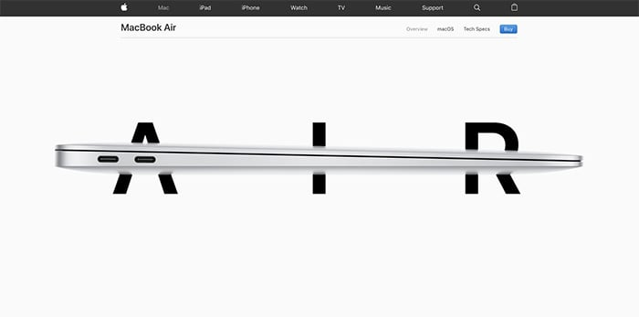

Visual Hierarchy
Visual Hierarchy is the arrangement or presentation of elements in a way that implies importance. It guides the viewer's attention to key elements through the use of contrast, alignment, size, color, and other visual cues.
Scale is employed in an interesting way in this poster. The collage of cropped jazz instruments and musicians is the major focal point. No image is more significant than the others, but when they are strategically tiled together with space and color, they produce one enormous shot that acts as the highest in the hierarchy.
Rule of Thirds
The Rule of Thirds is a principle that divides an image or layout into nine equal parts by two equally spaced horizontal lines and two equally spaced vertical lines. Elements in a design are then placed along these lines or at their intersections. This guideline helps to create balanced and visually appealing compositions.
Amazon use nine even boxes with text and material from the top of their homepage to the middle of the page. They have a horizontal broad box near the middle of the page for rotating, smaller graphics. They then rotate one line of three even boxes with one line of the horizontal wide box near the end of the page. After three more boxes and one line of horizontal box, you've reached the end of their website.
Whitespace and Clean Design
White space is the area of a design that is left empty or unmarked. Clean design uses white space effectively to create a sense of clarity and simplicity.
In this photo, Apple not only employs active whitespace deliberately to bring the user's eye to key components down the page, but the corporation also uses passive whitespace to navigate the user through the information without a hitch.